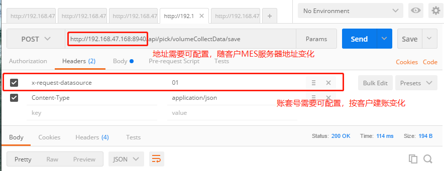
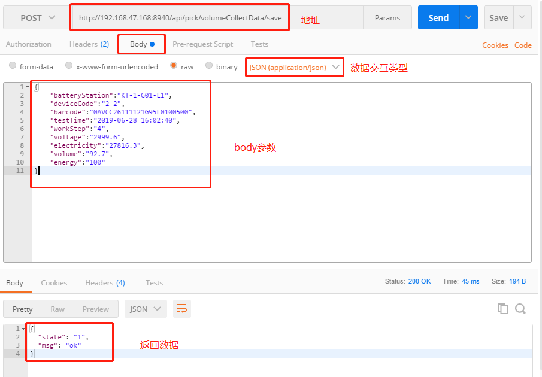
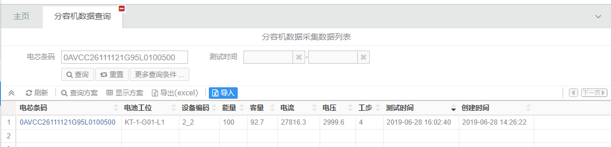

API 接口应用
接口应用案例
MES 与 分容机 软件接口定义 v1.0
MES 提供的分容机保存接口
MES 与分容机之间的通信采用 http 协议，双方数据交互采用 JSON 数据格式 > 实现方式采用 RESTful API
接口定义
| 定义 | ||||
|---|---|---|---|---|
| 给分容机提供 MES 数据保存服务 (单条数据保存) | ||||
| HTTP 地址 | /api/pick/volumeCollectData/save | |||
| HTTP 方法 | POST | |||
| Head 参数 | ||||
| 序号 | 字段代码 | 字段名称 | 类型 | 备注 |
| 1 | x-request-datasource | 账套编码 | 字符 | 用以指定对应 MES 账套 |
| Body 参数 | ||||
| 序号 | 字段代码 | 字段名称 | 类型 | 备注 |
| 1 | batteryStation | 电池工位 | 字符 | 必填 |
| 2 | deviceCode | 设备编码 | 字符 | 必填 |
| 3 | barcode | 电芯条码 | 字符 | 必填 |
| 4 | testTime | 测试时间 | 字符 | 必填 已格式化成 yyyy-MM-dd HH:mm:ss 格式 |
| 5 | workStep | 工步 | 字符 | 必填 |
| 6 | voltage | 电压 | 数值 | |
| 7 | electricity | 电流 | 数值 | |
| 8 | volume | 容量 | 数值 | |
| 9 | energy | 能量 | 数值 | |
| 返回参数 | ||||
| 序号 | 字段代码 | 字段名称 | 类型 | 备注 |
| 1 | state | 接口状态 | 数值 | 1 成功；-1 失败 |
| 2 | msg | 返回消息 | 字符 | |
| 3 | resBody | 返回数据 | 对象数组 | |
| 3.1 | resBody 中的字段说明 | |||
| 暂无 |
测试及样例截图
Head 参数

Body 参数(样例数据为插入了条码为 0AVCC26111121G95L0100500 的一条测试数据)

插入后，PC 端数据查询

其它：
每个【电芯条码】，MES 只会保留最新的一条数据
反复提交【电芯条码】相同的数据时，后进数据会覆盖先进数据；